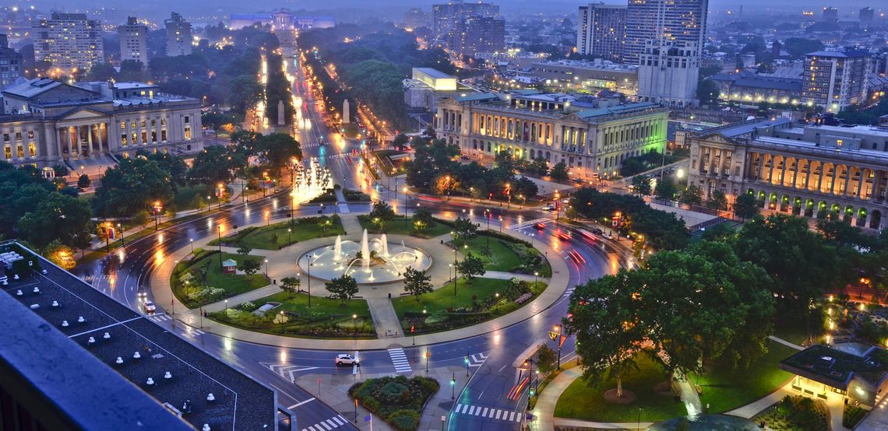

Here are some other events you can check out around the city!
Summerfest: One of the Philadelphia Waterfront's favorite summertime traditions featuring outdoor roller skating, boardwalk games and rides, mini-golf, and great food and drinks, all with soaring views of the Delaware River and Ben Franklin Bridge. Summerfest is the perfect place for a family outing, a school trip, or a meet-up with friends.
Winterfest: Philadelphia's favorite winter tradition on the Delaware River Waterfront, inviting visitors for a chance to indulge in flights of fancy under thousands of sparkling lights in a winter wonderland with spectacular views of the Delaware River. Cozy up in comforting warming cabins, fire pit stations, boardwalk rides and games for the young and young-at-heart, delicious food and hot beverages, the signature holiday tree, and, of course, ice skating on our NHL-sized rink. Winterfest is a top destination for anyone looking to rekindle family traditions.
Museum Mile: Philadelphia’s collection of art museums is located along the Benjamin Franklin Parkway, dubbed “Museum Mile” and modeled after the Champs-Élysées in Paris. Some of the city’s most famous sights can be found here, with the Swann Memorial Fountain in Logan Circle as the centerpiece.